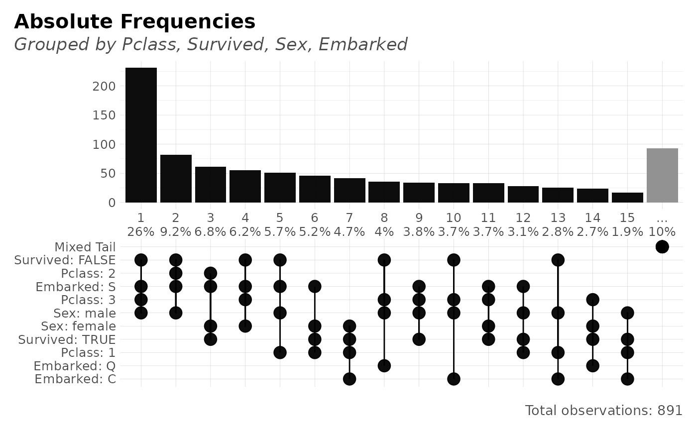

Plot frequencies of multiple categories within a data.frame in a new fancy way. Tidyverse friendly, based on lares::freqs(), no limits on amount of features to evaluate.
freqs_plot( df, ..., top = 10, rm.na = FALSE, abc = FALSE, title = NA, subtitle = NA )
Arguments
| df | Data.frame |
|---|---|
| ... | Variables. Variables you wish to process. Order matters. If no variables are passed, the whole data.frame will be considered |
| top | Integer. Filter and plot the most n frequent for values. |
| rm.na | Boolean. Remove NA values in the plot? (not filtered for numerical output; use na.omit() or filter() if needed) |
| abc | Boolean. Do you wish to sort by alphabetical order? |
| title | Character. Overwrite plot's title with. |
| subtitle | Character. Overwrite plot's subtitle with. |
See also
Other Frequency:
freqs_df(),
freqs()
Other Exploratory:
corr_cross(),
corr_var(),
crosstab(),
df_str(),
distr(),
freqs_df(),
freqs(),
gain_lift(),
lasso_vars(),
missingness(),
plot_cats(),
plot_df(),
plot_nums(),
summer(),
tree_var(),
trendsRelated()
Other Visualization:
distr(),
freqs_df(),
freqs(),
gg_bars(),
gg_pie(),
noPlot(),
plot_chord(),
plot_survey(),
plot_timeline(),
summer(),
theme_lares2(),
theme_lares(),
tree_var()
Examples
options("lares.font" = NA) # Temporal data(dft) # Titanic dataset df <- freqs_plot(dft, Pclass, Survived) head(df$data)#> # A tibble: 6 x 7 #> order n p pcum name value label #> <chr> <int> <dbl> <dbl> <chr> <chr> <chr> #> 1 6 80 8.98 100 Pclass 1 Pclass: 1 #> 2 6 80 8.98 100 Survived FALSE Survived: FALSE #> 3 5 87 9.76 91.0 Pclass 2 Pclass: 2 #> 4 5 87 9.76 91.0 Survived TRUE Survived: TRUE #> 5 4 97 10.9 81.3 Pclass 2 Pclass: 2 #> 6 4 97 10.9 81.3 Survived FALSE Survived: FALSEplot(df)freqs_plot(dft, Pclass, Survived, Sex, Embarked)#>freqs_plot(dft, Pclass, Survived, Sex, Embarked, top = 15)#>